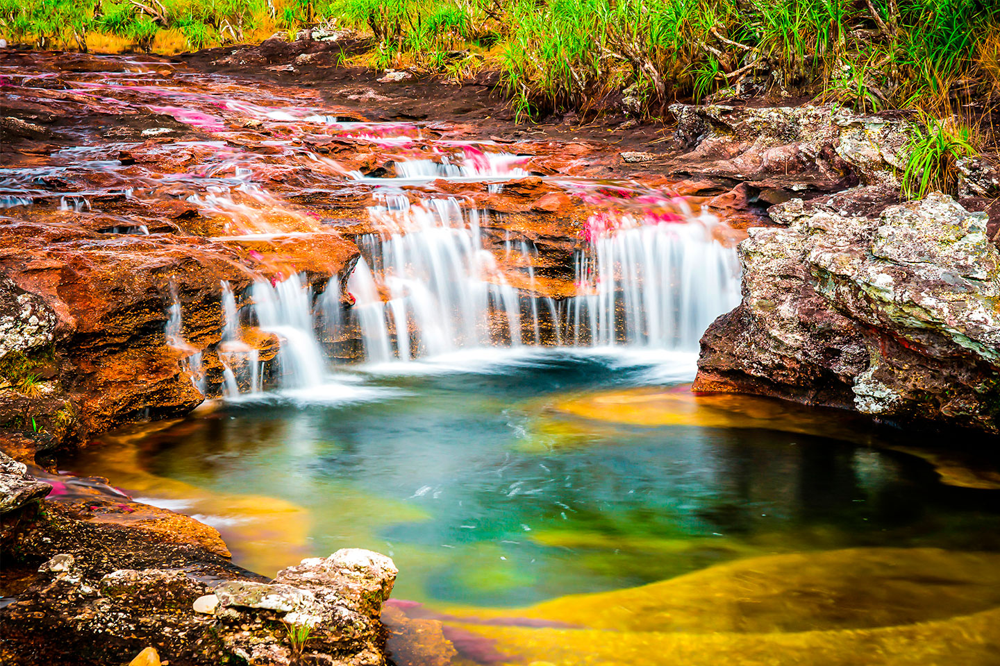

Caño Cristales es uno de los destinos turísticos más sorprendentes de Colombia y del mundo. Está ubicado en el municipio de La Macarena, en el departamento del Meta, dentro de la región de la Serranía de la Macarena. Este río es conocido como el "río de los cinco colores" o el "río más hermoso del mundo" debido a la variedad de tonalidades que pueden observarse en sus aguas, entre ellas rojo, amarillo, verde, azul y negro.
La principal responsable de este fenómeno natural es una planta acuática llamada Macarenia clavigera, que durante ciertas épocas del año adquiere un intenso color rojo al recibir la cantidad adecuada de luz solar y agua. La combinación de estas plantas con el fondo rocoso, el agua cristalina y los reflejos del sol crea un espectáculo visual único que atrae a miles de visitantes cada año.
Además de su belleza natural, Caño Cristales se encuentra en una zona de gran importancia ecológica, donde convergen ecosistemas de la Amazonía, la Orinoquía y los Andes. Esto permite la presencia de una gran diversidad de especies de flora y fauna, convirtiendo el lugar en un importante destino para el ecoturismo y la observación de la naturaleza.
El acceso a Caño Cristales está regulado para proteger su ecosistema, por lo que las visitas se realizan mediante recorridos guiados y bajo normas ambientales estrictas. Gracias a estas medidas, se busca conservar este tesoro natural para las futuras generaciones.
Visitar Caño Cristales es una experiencia inolvidable que permite disfrutar de uno de los paisajes más espectaculares de Colombia. Su extraordinaria combinación de colores, biodiversidad y riqueza natural lo convierten en un destino imperdible para quienes desean conocer las maravillas naturales del país.
